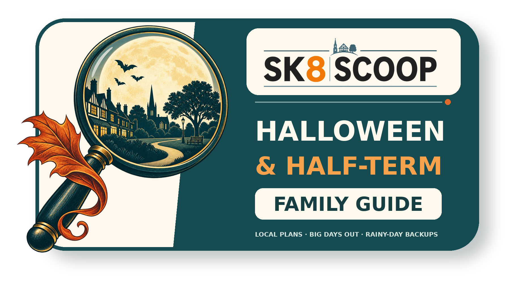
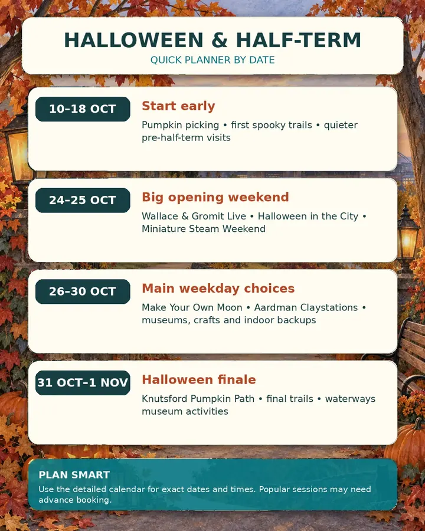
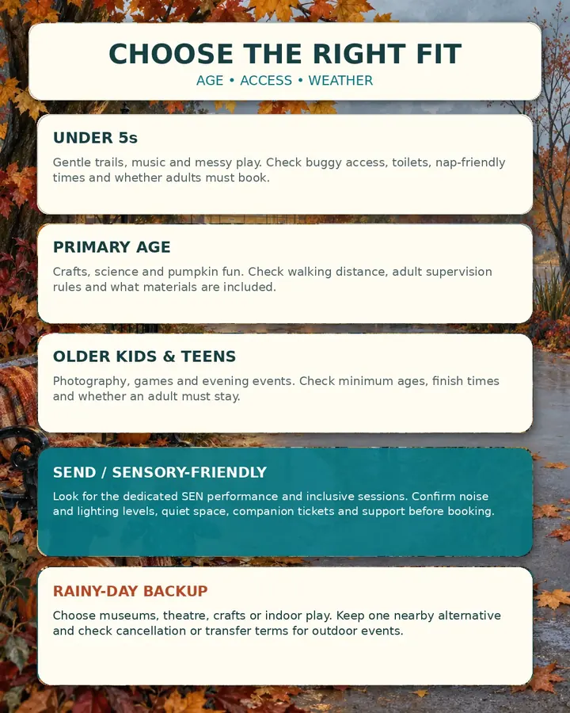

10–18 October
- Reddish Vale Pumpkin Festival starts 10 Oct
- Gandeys starts 10 Oct
- Reddish Vale midweek offer: 12–14 Oct
- Moonlight Pumpkins: 17 Oct
- Macclesfield Apple Day: 18 Oct

Family guide · October 2026
40 genuinely useful ideas for Cheadle, Cheadle Hulme, Gatley, Heald Green, Stockport and worthwhile trips across Greater Manchester and Cheshire.
Filter by price, age, weather and distance, then use the direct organiser link to check availability before setting off.
Plan without the faff
This guide brings related sessions together into 40 useful choices, so families can compare dates, cost, age fit, booking and access caveats without seeing the same day out several times. Local options come first; longer trips are included only when they offer something distinctive.


More useful calendar
This is a quick planning view, not a substitute for each event card. Multi-day activities appear in the most useful starting window.
Date warning: the Whitworth’s Afrocats page prints “Tuesday 28–Thursday 30 October”, but those weekdays do not match the 2026 calendar. This guide uses the numerical dates and tells readers to recheck.
Closest useful picks
The strongest close-to-home options, including five listings with unpublished prices that must be checked during booking.
Easy wider choices
Good public-transport or shorter-drive choices, with a strong mix of free museum activities, shows and practical rainy-day options.
Distinctive experiences
Longer journeys and bigger tickets are retained only where the experience offers something genuinely different.